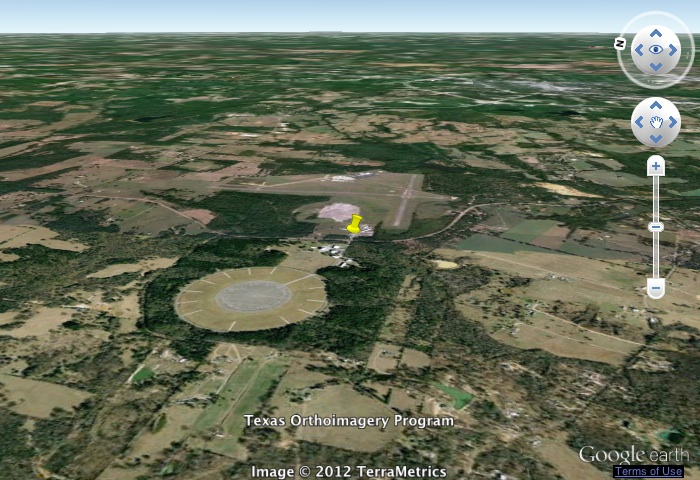

ASTRO 2013
We have applied to the NASA High Altitude Student Platform (HASP) program to fly our first payload, an electrostatic particle trap based on a design developed by Taewon Han and colleagues at Rutgers University.
Air Spora Trapping and Recovery Operation (ASTRO) is a student project led by Jessica Sandoval to recover high altitude biological particles and characterize them through sequencing.
What we will do?
-
•Build and test payload with a particle collector
-
•Fly as part of the HASP 2013 campaign (if selected) or another alternative
-
•Sequence collected particles
Image credit: Hamel & Thompson c/o Wikipedia
The HASP payload integration location: Columbia Scientific Balloon Facility
Updated 2012/08/09